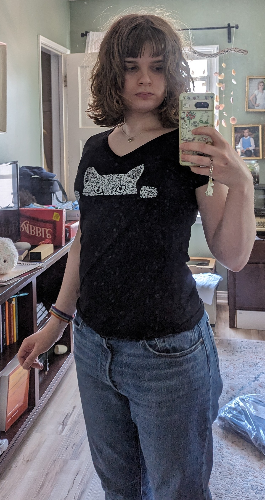

About Me
Hi! My name's Christa, and this is my website! The things I like are math, programming, crochet, sewing, and playing violin. My favorite area of math is mathematical logic (the proof of Gödel's first incompleteness theorem is the coolest thing ever and you should check it out!!). My most-used languages are Python and C++, but lately I have also been studying Haskell.. functional programming is really neat! A few more facts about me: I speak Finnish and I love Moomins, my favorite animal is the Capybara and my favorite airplane is the Concorde. I hope you enjoy my website! c: